Aventura y Relajo
En Cumbres y Vertientes recorre los miradores; en Guanábana Republic disfruta de piscinas naturales y cascada de rocas.
Descubre alojamientos únicos y los mejores destinos turísticos para tu próxima aventura.
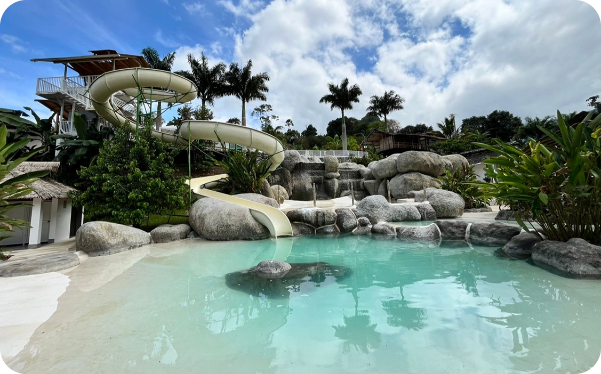
Piscinas
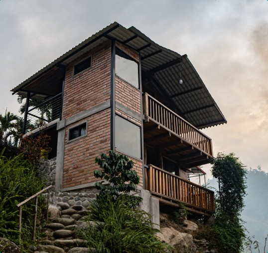
Piscinas
Sector Mirador de los Andes, CarchiAventura
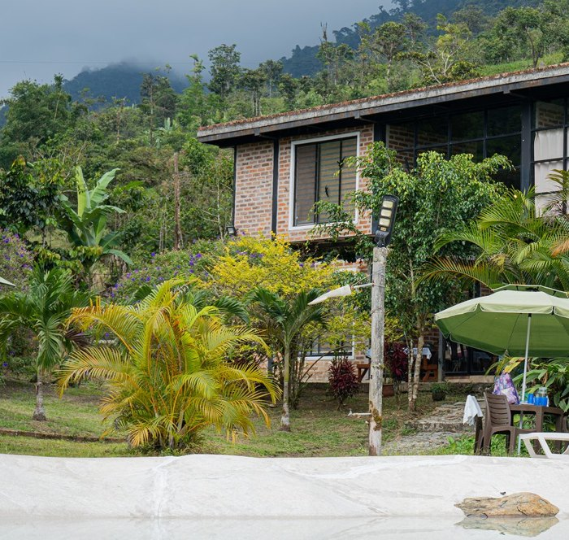
Hospedaje
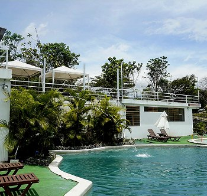
Piscinas
Chinambí reúne lo mejor de la naturaleza y el descanso en un solo lugar. Disfruta de ríos de tonalidad turquesa, confortables zonas de hospedaje, piscinas, gastronomía local y recorridos por fincas cafeteras con vistas panorámicas espectaculares. La experiencia perfecta para quienes buscan exploración, tranquilidad y momentos inolvidables.
En Cumbres y Vertientes recorre los miradores; en Guanábana Republic disfruta de piscinas naturales y cascada de rocas.
En Coffee Habitat vive el proceso del café de origen; en Eco Chinambí recorre senderos guiados de naturaleza.
En Casa Grande descansa en una casona con habitaciones, corredores y balcones tradicionales rodeados de naturaleza.
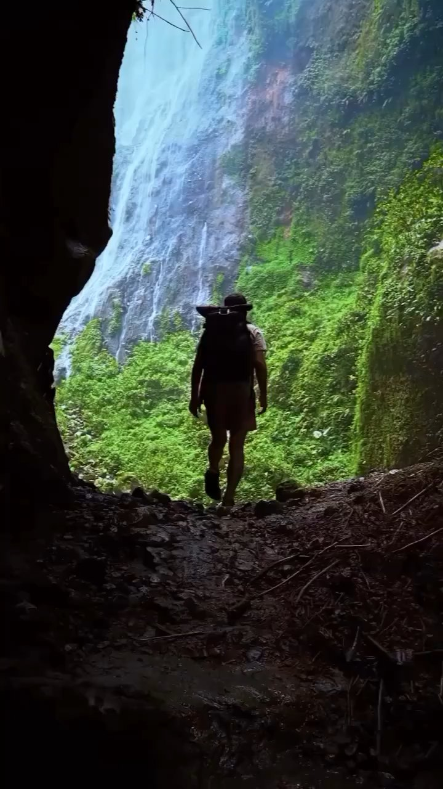
Chinambí es un sector rural de la parroquia Jacinto Jijón y Caamaño, cantón Mira, en el noroccidente de la provincia del Carchi, Ecuador. Junto con San Jacinto y San Patricio forma el Nodo Turístico Agroecológico, un destino de turismo rural, cultural y ambiental. Su río, el Chinambí, nace en los páramos del sur de Colombia y conecta con los páramos de El Ángel antes de bajar por la cordillera occidental.
Descubre alojamientos únicos y los mejores destinos turísticos para tu próxima aventura.
Cosecha, jugos y postres en honor a la fruta que le da nombre a Guanábana Republic.

El Chocó es uno de los diez puntos más biodiversos del planeta y se extiende por el noroccidente de Ecuador y el occidente de Colombia. En Chinambí protege cascadas, aves como tucanes y pájaros carpinteros, mariposas enormes y una gran variedad de anfibios. Para cuidar el agua y la fauna se creó el Área de Conservación y Uso Sostenible (ACUS) Chinambí, con más de 4.000 hectáreas.

Las comunidades de Chinambí, San Jacinto y San Patricio trabajan en agroecología y turismo comunitario. Cultivan plátano, cacao, café, yuca y guanábana, la fruta estrella de exportación, además de aguacate, pitahaya, piña y papaya, sin usar químicos. Entre sus atractivos están la Ruta de los Vados, los senderos, el Museo Nuestras Raíces y los ecolodges junto al río.
En San Jacinto se celebra el Festival de los Anfibios, que reúne a jóvenes, familias, instituciones y organizaciones para honrar a la rana arlequín del río Faisanes (Atelopus coynei). Esta especie fue considerada perdida tras fuertes declives y fue redescubierta en 2012 en Chinambí y San Jacinto. La edición de 2025 se realizó el 27 y 28 de junio, con arte, cultura y conservación. La rana fue declarada especie emblemática de la parroquia.
CHINAMBÍ EN CIFRAS
Visitantes de Pichincha, Imbabura, Carchi y el sur de Colombia.
Contacto: 0968289333 / chosarofabricio1978@gmail.com.
Contacto: 0980871248 / garciajulian1984@gmail.com.
Contacto: 0984129487 / ecochinambi@hotmail.com.
Contacto: 0985667417 / stalin_roceropadilla@hotmail.com.
Contacto: 0980217295 / rrivadeneiraa@gmail.com.
Creemos que un destino se disfruta mejor cuando se comparte entre varios techos
Cada sendero y mirador se cuida como el activo más valioso del territorio, no como un decorado.
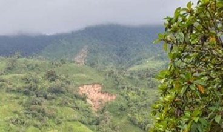
Guanábana Republic, Casa Grande, Cumbres y Vertientes y Coffee Habitat crecen mejor contando la misma historia.
La misma calidez de una casa de familia, ya sea en una cabaña, un domo o la mesa de un restaurante.
Ver ubicación real en Google Maps →
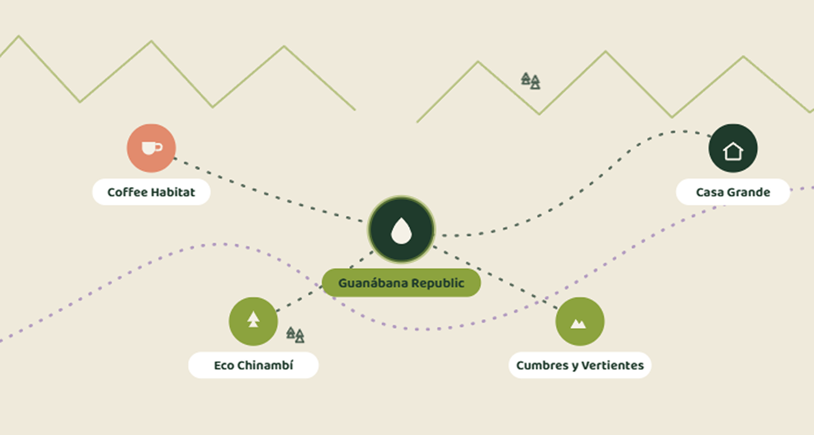
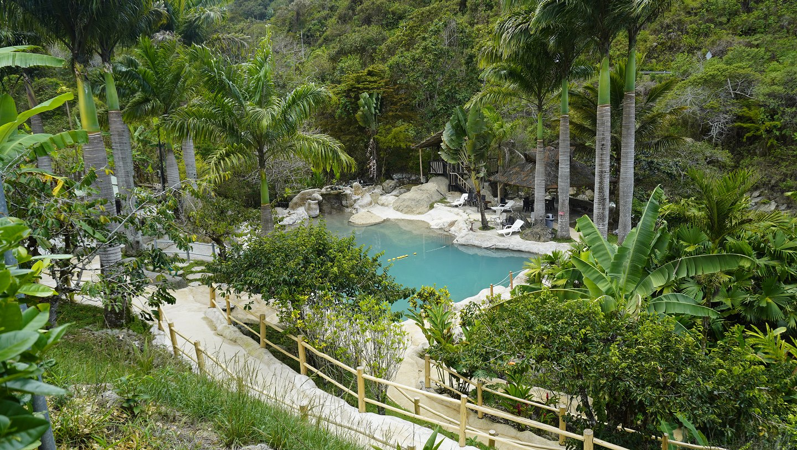
Guanábana RepublicTipo de servicio: Sitio de distracción y turismo.
Responsable: César Almeida (Gerente).
Contacto: 0968289333 / chosarofabricio1978@gmail.com.
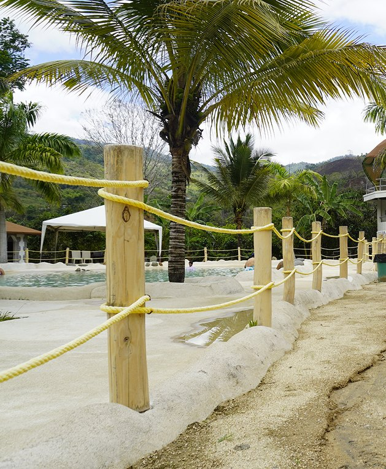
Inició hace aproximadamente 8 años con cultivos de guanábana. Al identificar el potencial turístico del entorno, se construyeron piscinas aprovechando las fuentes de agua natural de la zona.
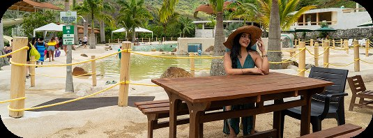
Vie a Dom y feriados de 9:00 AM - 5:00 PM.
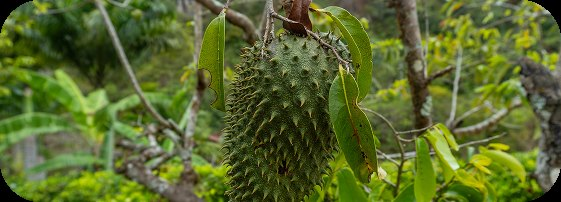
Latitud: 0.8100471, Longitud: -78.3104916.

Piscinas de diseño original con aprovechamiento de vertientes naturales.
Toboganes de diseño moderno.
Servicio de restaurante y bar con gastronomía local.
Cada paquete conecta hospedaje, aventura y gastronomía entre Guanábana Republic y el resto de Chinambí.
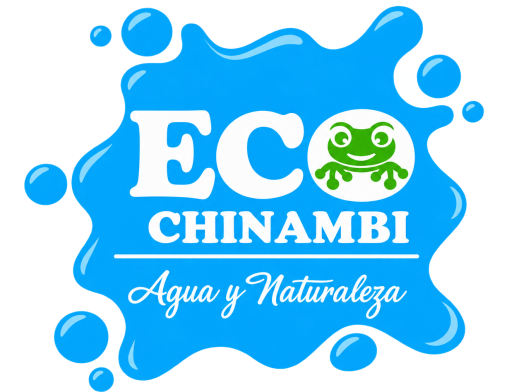
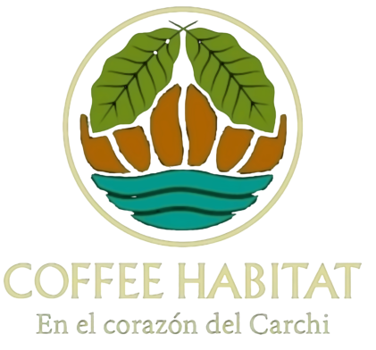
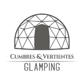
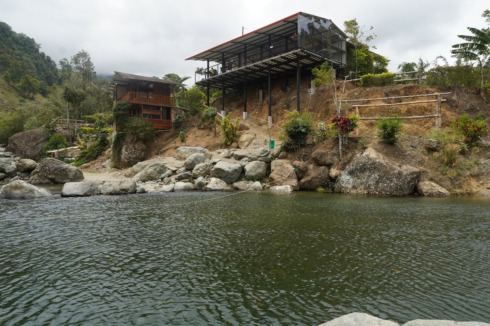
Tipo de servicio: Alimentación, bebidas y complejos agroecológicos con miradores.
Responsable: Julián García (Administrador).
Contacto: 0980871248 / garciajulian1984@gmail.com.
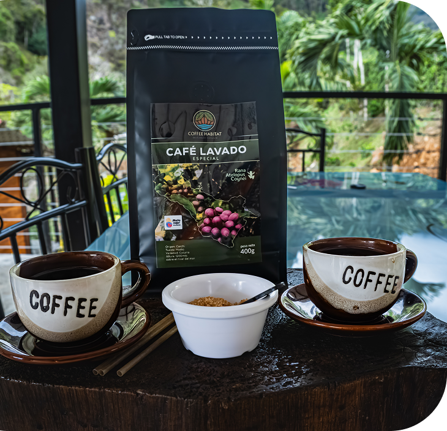
Nació como un proyecto de agroturismo. Es un espacio pet friendly que cuenta con acceso a piscinas y senderos naturales.
Sáb, Dom y feriados de 9:00 AM-6:00 PM.
Latitud: 0.8172° N, Longitud: -78.3045°
Experiencia Gastronómica: Comedor al aire libre especializado en tilapia fresca de criadero (frita o al vapor) y caldo de gallina criolla.
Piscinas de agua natural: Pozas alimentadas por vertientes naturales limpias.
Cada paquete conecta hospedaje, aventura y gastronomía entre Guanábana Republic y el resto de Chinambí.
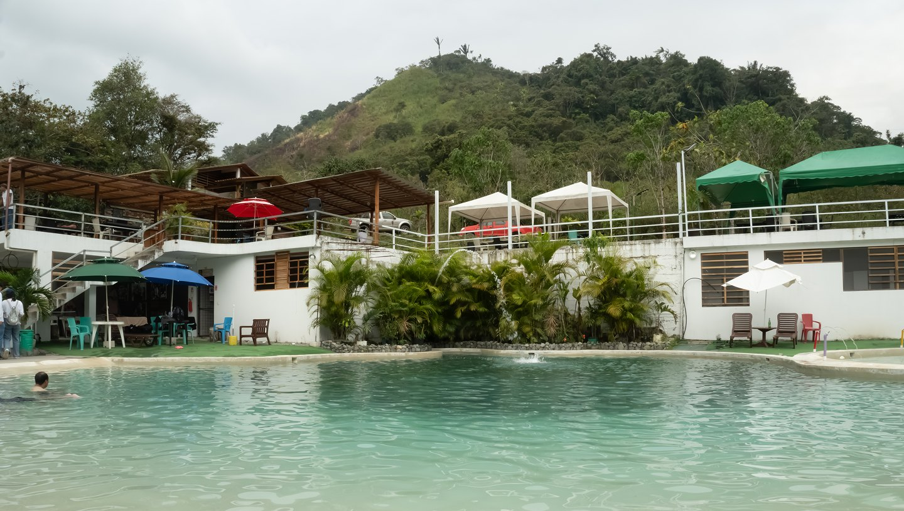
Tipo de servicio: Áreas húmedas, hospedaje, alimentación y acceso al río.
Responsable: Anahí Suárez (Administradora).
Contacto: 0984129487 / ecochinambi@hotmail.com.
Lleva 2 años en funcionamiento, surgido a partir del potencial turístico de la zona.
Sáb, Dom y feriados de 9:00 AM-6:00 PM (entre semana mediante reserva previa para grupos de al menos 15 personas).
Latitud: 0.8100471, Longitud: -78.3104916.
Acceso directo a río de agua cristalina y climatizada
Áreas verdes con amplia diversidad de flora y fauna
Piscina de diseño natural y moderno
Cada paquete conecta hospedaje, aventura y gastronomía entre Guanábana Republic y el resto de Chinambí.
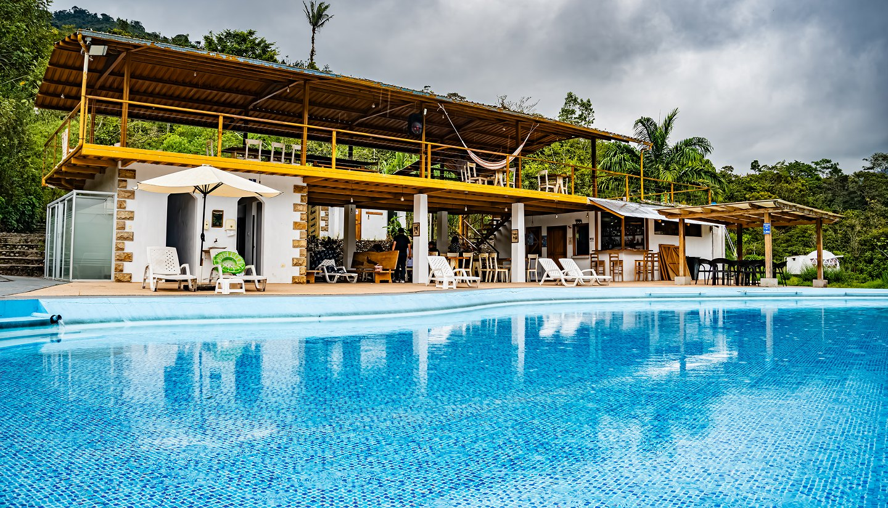
Cumbres y VertientesTipo de servicio: Hostería y glamping.
Responsable: Edgar Stalin Rocero Padilla (Gerente).
Contacto: 0985667417 / stalin_roceropadilla@hotmail.com.
Así fue creciendo Chinambí, un paso a la vez, hasta convertirse en el circuito que es hoy.
Nació hace aproximadamente 3 años como un descanso familiar. Ante el interés de los visitantes por alquilarlo, se adaptó con la tendencia de domos hasta contar con seis opciones de alojamiento.
Abierto fines de semana de 8:00 AM-12:00 AM; atención permanente bajo reserva. Check-in/Check-out de hospedaje al mediodía (12:00 PM).
Latitud: 0.816989, Longitud: -78.287672.
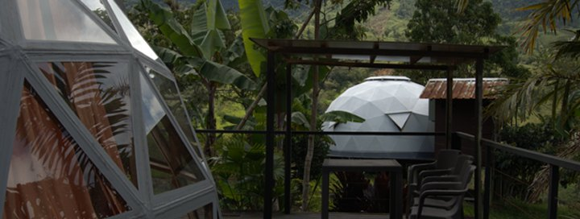
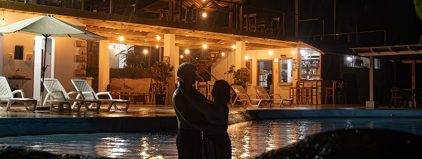
Hospedaje variado: Domos matrimoniales (normales y con jacuzzi), domos familiares, glamping y habitaciones.
Naturaleza: Senderos guiados para caminatas.
Balneario y relajación: Instalaciones con piscina, turco e hidromasaje.
Cada paquete conecta hospedaje, aventura y gastronomía entre Guanábana Republic y el resto de Chinambí.
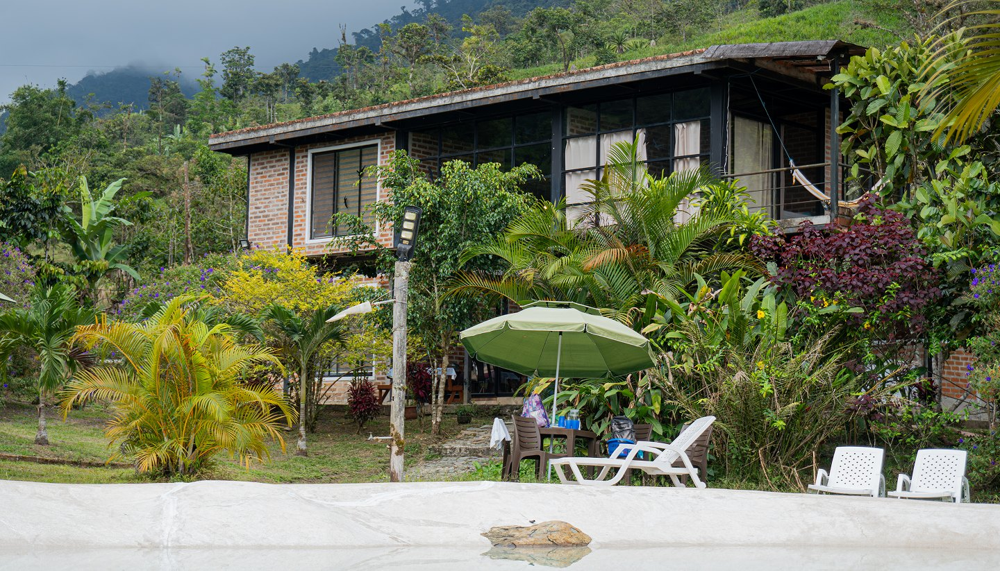
Tipo de servicio: Hospedaje y servicio de restaurante.
Responsable: Rosana Rivadeneira (Administradora).
Contacto: 0980217295 / rrivadeneiraa@gmail.com.
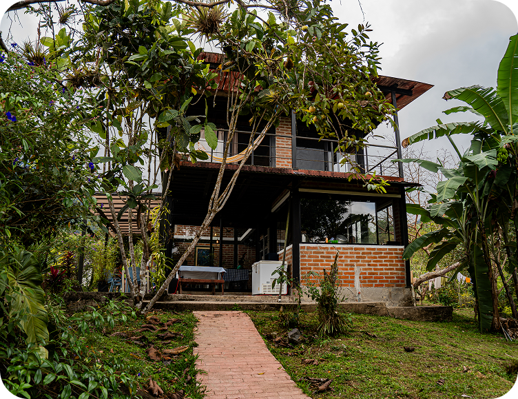
Inició como una residencia familiar. Comenzaron a alquilar la propiedad en Airbnb y, ante la demanda de los huéspedes por servicio de comida, ampliaron las instalaciones construyendo cabañas y abriendo un restaurante.
Fines de semana para pases del día de 10:30 AM-5:30 PM; atención entre semana únicamente con reserva para grupos. Check-in/Check-out de hospedaje a las 12:00 PM.
Latitud: 0.822431, Longitud: -78.280716.
Observación de fauna: Avistamiento de tucanes, variedad de aves, anfibios/ranas y armadillos en un entorno natural preservado.
Instalaciones de relajación: Piscina, jacuzzi, área de BBQ y acceso directo al río y riachuelo.
Cada paquete conecta hospedaje, aventura y gastronomía entre Guanábana Republic y el resto de Chinambí.